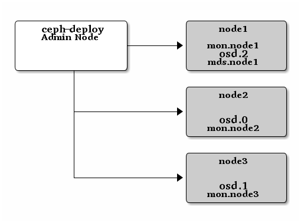

存储集群入门¶
如果你还没完成飞前检查，先做完。本篇入门用
ceph-deploy 从管理节点配置一个 Ceph 存储集群，创建了一个三节点的集群，以此发掘 Ceph 功能。

第一次练习时，我们创建一个 Ceph 存储集群，它有一个监视器、两个
OSD 守护进程。一旦集群达到 active + clean 状态，再扩展它：增加第三个 OSD 、增加元数据服务器、和两个 Ceph 监视器。为获得最佳体验，先在管理节点上创建一个目录，用于保存 ceph-deploy
生成的配置文件和密钥对。
mkdir my-cluster
cd my-cluster
ceph-deploy 会把文件输出到当前目录，所以执行的时候要先进入此目录。
Important
不要用 sudo 或在另一普通用户下以 root
身份运行 ceph-deploy ，因为它不能在远程主机上调用
sudo ，而 root 权限又是必需的。
禁用 requiretty
在某些发行版（如 CentOS ）上，执行 ceph-deploy 命令时，如果你的 Ceph 节点默认设置了 requiretty 那就会遇到报错。可以这样禁用此功能，执行 sudo visudo ，找到
Defaults requiretty 选项，把它改为
Defaults:ceph !requiretty ，这样 ceph-deploy 就能用
ceph 用户登录并使用 sudo 了。
创建一集群¶
如果在某些地方碰到麻烦，想从头再来，可以用下列命令清除 Ceph 软件包，并擦除所有数据和配置：
ceph-deploy purge {ceph-node} [{ceph-node}]
ceph-deploy purgedata {ceph-node} [{ceph-node}]
ceph-deploy forgetkeys
如果执行了 purge ，你必须重新安装 Ceph 。
在管理节点上，进入刚创建的放置配置文件的目录，用
ceph-deploy 执行如下步骤。
创建集群。
ceph-deploy new {initial-monitor-node(s)}
用主机名、 FQDN 或 hostname:fqdn 做节点名，例如：
ceph-deploy new node1
用
ls和cat检查ceph-deploy的输出，应该有一个 Ceph 配置文件、一个监视器密钥环、和一个日志文件。详情见 ceph-deploy new -h 。把 Ceph 配置文件里的默认副本数从
3改成2，这样只有两个 OSD 也可以达到active + clean状态。把下面这行加入[global]段：osd pool default size = 2
如果你有多个网卡，可以把
public network写入 Ceph 配置文件的[global]段下。详情见网络配置参考。public network = {ip-address}/{netmask}
安装 Ceph 。
ceph-deploy install {ceph-node}[{ceph-node} ...]
例如：
ceph-deploy install admin-node node1 node2 node3
ceph-deploy将在各节点安装 Ceph 。 注：如果你执行过ceph-deploy purge，你必须重新执行这一步来安装 Ceph 。配置初始监视器、并收集所有密钥：
ceph-deploy mon create-initial
完成上述操作后，当前目录里应该会出现这些密钥环：
{cluster-name}.client.admin.keyring{cluster-name}.bootstrap-osd.keyring{cluster-name}.bootstrap-mds.keyring{cluster-name}.bootstrap-rgw.keyring
Note
只有在安装 Hammer 或更高版时才会创建 bootstrap-rgw 密钥环。
Note
如果这里失败了，提示消息类似 “Unable to find /etc/ceph/ceph.client.admin.keyring” ，需核实 ceph.conf 里的监视器节点的 IP 地址，应该是公网 IP 而非私网 IP 。
添加两个 OSD 。为了快速地安装，这篇快速入门把目录而非整个硬盘用于 OSD 守护进程。关于单独把硬盘或分区用于 OSD 及其日志，请参考 ceph-deploy osd 。登录到 Ceph 节点、并给 OSD 守护进程创建一目录。
ssh node2 sudo mkdir /var/local/osd0 exit ssh node3 sudo mkdir /var/local/osd1 exit
然后，从管理节点执行
ceph-deploy来配置 OSD 。ceph-deploy osd prepare {ceph-node}:/path/to/directory
例如：
ceph-deploy osd prepare node2:/var/local/osd0 node3:/var/local/osd1
最后，激活 OSD 。
ceph-deploy osd activate {ceph-node}:/path/to/directory
例如：
ceph-deploy osd activate node2:/var/local/osd0 node3:/var/local/osd1
用
ceph-deploy把配置文件和 admin 密钥拷贝到管理节点、和 Ceph 节点，这样你每次执行 Ceph 命令行时就无需指定监视器地址和ceph.client.admin.keyring了。ceph-deploy admin {admin-node} {ceph-node}
例如：
ceph-deploy admin admin-node node1 node2 node3
ceph-deploy和本地管理主机（admin-node）通信时，所有主机都必须通过主机名可达。必要时可修改/etc/hosts，加入管理主机的名字。确保
ceph.client.admin.keyring的权限位正确无误。sudo chmod +r /etc/ceph/ceph.client.admin.keyring
检查集群健康状况。
ceph health
互联完成后，集群应该达到
active + clean状态。
运营集群¶
用 ceph-deploy 部署完成后它会自动启动集群。要在 Debian/Ubuntu 发行版下操作集群守护进程，参见用 upstart 控制 Ceph ；要在 CentOS 、 Red Hat 、 Fedora 和 SLES 下操作集群守护进程，参见通过 sysvinit 机制运行 Ceph 。
关于互联和集群健康状况请参见监控集群；关于 OSD 守护进程和归置组健康状况参见监控 OSD 和归置组；关于用户管理请参见用户管理。
Ceph 集群部署完成后，你可以尝试一下管理功能、 rados 对象存储命令，之后可以继续快速入门手册，了解 Ceph 块设备、 Ceph 文件系统和 Ceph 对象网关。
扩展集群（扩容）¶
一个基本的集群启动并开始运行后，下一步就是扩展集群。在 node1 上添加一个 OSD 守护进程和一个元数据服务器。然后分别在 node2 和 node3 上添加监视器，以形成法定人数。

添加 OSD¶
你运行的这个三节点集群只是用于演示的，把 OSD 添加到监视器节点就行。
ssh node1
sudo mkdir /var/local/osd2
exit
然后，从 ceph-deploy 节点准备 OSD 。
ceph-deploy osd prepare {ceph-node}:/path/to/directory
例如：
ceph-deploy osd prepare node1:/var/local/osd2
最后，激活 OSD 。
ceph-deploy osd activate {ceph-node}:/path/to/directory
例如：
ceph-deploy osd activate node1:/var/local/osd2
一旦你新加了 OSD ， Ceph 集群就开始重均衡，把归置组迁移到新 OSD 。可以用下面的 ceph 命令观察此过程：
ceph -w
你应该能看到归置组状态从 active + clean 变为 active ，还有一些降级的对象；迁移最终完成时又回到 active + clean 状态（ Control-C 退出）。
添加元数据服务器¶
至少有一个元数据服务器才能使用 CephFS ，执行下列命令创建元数据服务器：
ceph-deploy mds create {ceph-node}
例如：
ceph-deploy mds create node1
Note
当前生产环境下的 Ceph 只能运行一个元数据服务器。你可以配置多个，但现在我们还不会为多个并行的元数据服务器提供商业支持。
添加 RGW 例程¶
要使用 Ceph 的 Ceph 对象网关组件，必须部署 RGW 例程。用下列方法创建新 RGW 例程：
ceph-deploy rgw create {gateway-node}
例如：
ceph-deploy rgw create node1
Note
这个功能是 Hammer 版才开始有的，还需要 ceph-deploy v1.5.23 。
RGW 例程默认会监听 7480 端口，可以更改 ceph.conf 内与此 RGW 相关的配置，如下：
[client]
rgw frontends = civetweb port=80
用的是 IPv6 地址的话：
[client]
rgw frontends = civetweb port=[::]:80
添加监视器¶
Ceph 存储集群需要至少一个监视器才能运行。为达到高可用性，典型的 Ceph 存储集群都需要运行多个监视器，这样在单个监视器失败时不会影响 Ceph 存储集群的可用性。它用 PASOX 算法，此算法要求有多半监视器（即 1 、 2:3 、 3:4 、 3:5 、 4:6 ）形成法定人数。
新增两个监视器到 Ceph 集群。
ceph-deploy mon add {ceph-node}
例如：
ceph-deploy mon add node2
ceph-deploy mon add node3
新增监视器后，它会自动开始同步、并形成法定人数。你可以用下面的命令检查法定人数状态：
ceph quorum_status --format json-pretty
Tip
当你的 Ceph 集群运行着多个监视器时，各监视器主机上都应该配置 NTP ，而且要确保这些监视器位于 NTP 服务的同一级。
存入/检出对象数据¶
要把对象存入 Ceph 存储集群，客户端必须做到：
- 指定对象名
- 指定存储池
Ceph 客户端检出最新的集群运行图，客户端用 CRUSH 算法动态地计算出如何把对象映射到归置组、然后计算如何把归置组分配到 OSD 。要定位对象，只需要对象名和存储池名字即可，例如：
ceph osd map {poolname} {object-name}
练习：定位某个对象
作为练习，我们先创建一个对象，用 rados put 命令加上对象名、一个有数据的测试文件路径、并指定存储池。例如：
echo {Test-data} > testfile.txt
rados mkpool data
rados put {object-name} {file-path} --pool=data
rados put test-object-1 testfile.txt --pool=data
为确认 Ceph 存储集群存储了此对象，这样确认：
rados -p data ls
现在，定位对象：
ceph osd map {pool-name} {object-name}
ceph osd map data test-object-1
Ceph 应该会输出对象位置，例如：
osdmap e537 pool 'data' (0) object 'test-object-1' -> pg 0.d1743484 (0.4) -> up [1,0] acting [1,0]
rados rm 可删除此测试对象，例如：
rados rm test-object-1 --pool=data
随着集群的运行，对象位置可能会动态改变。 Ceph 有动态均衡机制，无需手动干预即可完成。